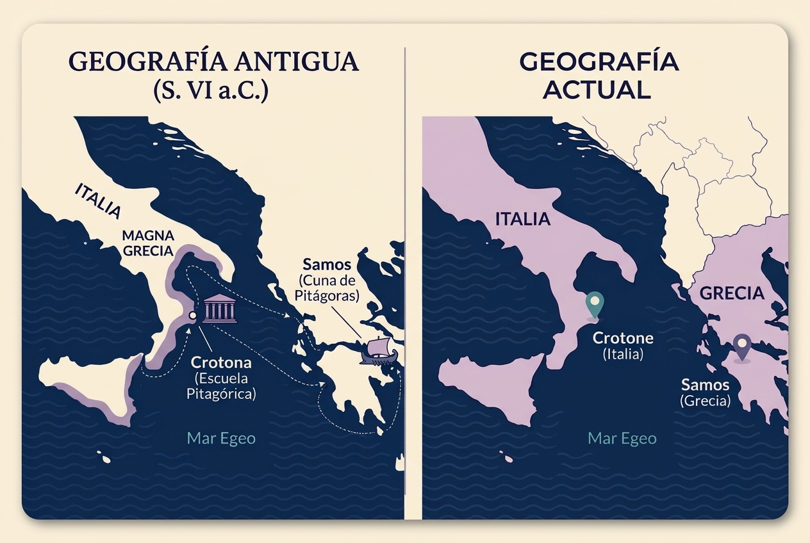

MÓDULO I: FUNDAMENTOS E HISTORIA
El Filósofo que no Buscaba Adivinar, sino Comprender: De la Acústica Antigua a la Ciencia Moderna
La numerología seria no exige fe a ciegas ni fatalismo mágico. Se fundamenta en la observación rigurosa de las leyes de proporción, la física acústica del sonido y la contrastación empírica en biografías humanas. Los números no determinan tu futuro; describen tu mapa de potencialidades y los ciclos disponibles para que tu libre albedrío tome decisiones conscientes.
1. El Descubrimiento de Pitágoras: La Música es Matemática en Acción
Mucho antes de que existieran las computadoras, los algoritmos o la física cuántica, en la antigua Grecia un hombre comprendió algo revolucionario: todo lo que nos rodea puede traducirse a números. Ese hombre fue Pitágoras de Samos (c. 570 – 495 a.C.).
Lejos de la imagen folclórica del místico aislado, Pitágoras fundó en Crotona la célebre Escuela Pitagórica, donde la matemática no se enseñaba como un ejercicio mecánico de contabilidad, sino como la estructura atómica y vibracional del cosmos.

Nota Histórica sobre Samos
Samos era una próspera polis griega en el mar Egeo oriental, frente a las costas de Asia Menor (actual Turquía); hoy pertenece oficialmente a Grecia. Huyendo de la tiranía de Polícrates, Pitágoras emigró hacia el occidente y fundó su comunidad en Crotona (c. 530 a.C.), una influyente ciudad marítima de la Magna Grecia —territorio colonizado por los griegos en el sur de la península itálica—. En la actualidad, Crotone existe y es una ciudad y provincia italiana situada en la región de Calabria (frente al mar Jónico).
El Experimento del Monocordio: La Física del Sonido
Además de formular el célebre Teorema de Pitágoras sobre los lados del triángulo rectángulo —principio geométrico fundamental que sostiene hasta hoy las bases de la matemática, la ingeniería estructural y la arquitectura moderna—, Pitágoras descubrió que la belleza musical responde a proporciones matemáticas fijas:
Por primera vez en la historia, la ciencia demostró que una experiencia tan sutil y profundamente emotiva como la música estaba gobernada por una ley aritmética verificable. Siguiendo esa misma analogía, podemos observar la vida humana como una partitura en desarrollo, donde cada número actúa como una pauta de afinación para comprender nuestro propio diseño.
2. De la Escuela Antigua a la Escuela Moderna: El Puente de 2500 Años
La numerología aplicada que estudiamos hoy no es un calco directo de lo que se practicaba en Grecia en el siglo VI a.C. Ha experimentado una evolución decisiva en dos grandes etapas:
3. Las Mentes Pioneras: Sarah Joanna Dennis y la Dra. Juno Jordan
Para entender el método moderno, debemos situarnos en Atlantic City, New Jersey, entre 1900 y 1920. En una época deslumbrada por la telegrafía sin hilos y las ondas hertzianas, Sarah Joanna Dennis (1847–1929) —conocida públicamente como Mrs. L. Dow Balliett— unió tres pilares: la escala musical pitagórica, la física de la resonancia acústica y el alfabeto occidental.
¿Por qué firmaba con el nombre de su esposo?
En la época victoriana, las convenciones sociales dictaban que las mujeres casadas fueran acreditadas mediante la identidad formal de sus cónyuges. Firmar como Mrs. L. Dow Balliett le concedió legitimidad ante un mercado editorial dominado por hombres. Hoy rescatamos su nombre propio, Sarah Joanna Dennis, como la verdadera arquitecta del método.
Dennis diseñó la matriz decimal de conversión del alfabeto (A = 1, B = 2... I = 9), descubrió que las vocales expresan el deseo íntimo (Impulso del Alma) y las consonantes la proyección exterior (Personalidad), e identificó los Números Maestros (11, 22, 33). Entre 1904 y 1917 publicó obras fundacionales como La filosofía de los números: sus tonos y colores (The Philosophy of Numbers: Their Tone and Colors), disponible en dominio público para su consulta en Internet Archive.
El Origen de la Palabra «Numerología»
Pitágoras nunca escuchó la palabra «Numerología». Durante milenios el saber se conoció como aritmancia o ciencia de las vibraciones numéricas. El término en inglés Numerology fue acuñado en 1912 por una colega de Balliett, la Dra. Julia Seton Sears, para brindarle un marco científico y renovado a la disciplina.
La Contrastación Empírica: La Dra. Juno Jordan
A los 14 años, Juno Jordan (1884–1984) comenzó a formarse directamente con Sarah Balliett. Ya recibida de cirujana dentista y con formación en el método científico, fundó en California el célebre Instituto de Investigación Numérica de California (California Institute of Numerical Research).
Durante más de 25 años de investigaciones clínicas continuas, Jordan y su equipo contrastaron miles de biografías, fechas y nombres reales. Su investigación permitió descartar fórmulas supersticiosas y confirmar empíricamente los cálculos de mayor consistencia. Su obra cumbre de 1965, El romance en tu nombre (The Romance in Your Name) —publicada por DeVorss & Company y disponible para estudio en bibliotecas abiertas como Internet Archive—, consolidó de forma definitiva la arquitectura de la Carta Numerológica moderna.
4. La Carta Numerológica Integral: Estructura en Tres Dimensiones
La Carta o Mapa Numerológico: ¿Qué es exactamente?
En la práctica, la herramienta central de estudio de esta disciplina se denomina Carta Numerológica (o Mapa Natal Numerológico).
Así como un geógrafo utiliza un mapa topográfico para comprender el relieve de un terreno, o un navegante usa una carta náutica para trazar su ruta, en numerología pitagórica llamamos «carta» al documento de síntesis donde se vuelcan, organizan y cruzan todas las coordenadas matemáticas de un individuo (obtenidas a partir de su fecha de nacimiento y su nombre legal completo).
La Carta Numerológica no es un horóscopo comercial ni un diagnóstico rígido sobre el destino. Es una radiografía vibracional y un plano de diseño humano que revela las fortalezas, desafíos inconscientes, ciclos biográficos y potenciales latentes de una persona. Funciona como un sistema biográfico completo estructurado en tres dimensiones complementarias:
Dimensión 1: Las Coordenadas Natales (La Fecha de Nacimiento)
Representa tu punto de partida, tu diseño de fábrica y el marco evolutivo con el que llegas al mundo:
- Día Natal (Tu Talento Innato): Describe tu herramienta temperamental primaria, tus respuestas reflejas automáticas y cómo enfrentas los desafíos cotidianos sin necesidad de pensarlo.
- Mes Natal (Tu Raíz Emocional): Define el filtro a través del cual procesas el mundo afectivo, los vínculos íntimos y tus patrones emocionales profundos.
- Año Natal (Tu Raíz Generacional): Enmarca el contexto histórico y la lección de época compartida con tus contemporáneos.
- Suma Total de la Fecha (Camino de Vida): Es el número fundamental y eje de la carta. Señala tu misión de aprendizaje mayor y la dirección de menor resistencia para tu crecimiento personal.
Dimensión 2: La Matriz Onomástica (La Acústica del Nombre Completo)
Representa tu vehículo de acción en la materia y cómo canalizas ese potencial de fábrica en la sociedad a través del valor sonoro de tu nombre legal registrado:
- Suma de las Vocales (Impulso del Alma): Revela tus motivaciones privadas, qué anhelas en tu intimidad y qué necesitas experimentar para sentir plenitud y bienestar interior.
- Suma de las Consonantes (Personalidad Exterior): Describe la primera impresión que proyectas en el entorno, tu fachada social y el mecanismo de protección que utilizas al vincularte con los demás.
- Suma Total de Letras (Número de Expresión): Es el motor operativo de tu vida práctica. Define tus talentos profesionales, habilidades concretas y la forma en que ejecutas tus metas en el mundo material.
Dimensión 3: Las Dinámicas Temporales (El Factor Tiempo y los Ciclos)
La carta no es una fotografía congelada; interactúa permanentemente con el paso del tiempo y sus distintas estaciones biográficas:
- Los 4 Pináculos (Estaciones Vitales): Cuatro grandes ciclos de vida (que abarcan períodos de varias décadas) donde se despliega tu energía para lograr maduración, concreción y aprendizaje.
- Los Desafíos (Áreas de Tensión y Crecimiento): Pruebas psicológicas y asignaturas pendientes que acompañan a cada pináculo para impulsarte a desarrollar recursos que aún no tienes integrados.
- Año Personal (Clima Anual): La frecuencia específica que rige tus doce meses calendario actuales (en un ciclo de 9 años), marcando si la estación favorece la siembra, la paciencia, la expansión, la introspección o la cosecha.
| Dimensión | Elemento de Entrada | Concepto Técnico | Función en la Biografía Humana |
|---|---|---|---|
| 1. Coordenadas Natales (Origen y Destino) |
Día de Nacimiento | Talento Innato | Herramienta instintiva de fábrica y respuesta primaria ante los retos cotidianos. |
| Mes de Nacimiento | Raíz Emocional | Filtro psicológico del afecto, la dinámica familiar y los vínculos íntimos. | |
| Año de Nacimiento | Raíz Generacional | Contexto de época, marco histórico y aprendizaje colectivo compartido. | |
| Día + Mes + Año | Camino de Vida | Eje central de la carta: misión evolutiva y ruta de menor resistencia personal. | |
| 2. Matriz Onomástica (Vehículo y Acción) |
Suma de Vocales | Impulso del Alma | Anhelo inconsciente, motivación privada y condiciones para sentir plenitud. |
| Suma de Consonantes | Personalidad Exterior | Máscara social, primera impresión proyectada y blindaje ante el entorno. | |
| Total de Letras | Número de Expresión | Motor práctico, capacidades profesionales y manifestación concreta en la materia. | |
| 3. Dinámicas Temporales (Ciclos y Clima) |
Fórmulas de Cúspide | Los 4 Pináculos | Grandes estaciones vitales y etapas biográficas de maduración y florecimiento. |
| Sustracciones Natales | Los Desafíos | Tensiones psicológicas requeridas para integrar y activar nuevas virtudes. | |
| Día + Mes + Año en curso | Año Personal | Clima energético de los 12 meses actuales (ritmo evolutivo en ciclos de 9 años). |
5. El Camino de Vida
Libre Albedrío: Soberanía frente al Determinismo
Habiendo comprendido la arquitectura general de la carta, corresponde profundizar en su coordenada principal: el Camino de Vida. Al ser el resultado de integrar la fecha de nacimiento completa, representa el aprendizaje evolutivo mayor de la persona.
¿Creer o calcular? El lenguaje de los patrones
Para entender la numerología seria no hace falta «fe». Solo hace falta observación. La naturaleza no crea de forma caótica. Las espirales de un girasol, la forma de una galaxia, la disposición de los pétalos de una rosa, la estructura intrincada de nuestras propias cadenas de ADN y la geometría infinita de los fractales siguen secuencias matemáticas concretas: como la famosa sucesión de Fibonacci, la proporción áurea y los patrones autosimilares que se repiten a diferentes escalas.
La física moderna nos enseña que toda la materia en el fondo es energía vibrando a diferentes frecuencias. Los números son, en esencia, símbolos que representan esas frecuencias específicas.
Cuando la numerología pitagórica analiza tu fecha de nacimiento, no está haciendo magia ni predicción del futuro. Lo que hace es identificar la impronta matemática del día en que llegaste al mundo.
Pensalo por un segundo: el día en que naciste, el planeta estaba en una posición exacta, la Tierra completaba un ciclo específico y el tiempo registraba una coordenada irrepetible. Esa coordenada matemática es tu código fuente.
Así como en la informática el código fuente contiene las instrucciones invisibles que determinan cómo va a procesar la información un sistema, tu matriz de nacimiento es el software base con el que viniste instalado de fábrica. Tu personalidad y tus decisiones diarias son la interfaz gráfica que ve el exterior; y, al igual que la ficha técnica de un avatar en un videojuego, tus números definen tus atributos base, herramientas nativas y rangos de acción con los que ejecutas la partida, dejando el rumbo de las decisiones en manos de tu libre albedrío.
Sin embargo, para interpretar este número con rigor profesional es indispensable derribar el mito del determinismo: la numerología no adivina el futuro ni sentencia la suerte. Su verdadero valor radica en ofrecer un marco de referencia claro para distinguir aquello con lo que venimos al mundo de las decisiones que tomamos a partir de ello:
«Los números no te atan a un destino prefijado; encienden las luces del tablero de comandos para que seas tú quien pilotee su vida con lucidez y soberanía».
6. Las Dinámicas Temporales: Pináculos y Años Personales
El Factor Tiempo: Navegación Consciente frente al Fatalismo
Una de las confusiones más frecuentes en quien se acerca por primera vez a la numerología es creer que las dinámicas temporales (los Pináculos y los Años Personales) son sentencias rígidas que predicen lo que va a sucederte. La realidad es exactamente la contraria: no anuncian sucesos prefijados, sino que describen la marea y el clima energético en el que te tocará operar.
El tiempo numerológico funciona exactamente como las condiciones climáticas:
La Metáfora del Clima
Si el meteorólogo anuncia una tormenta con temperaturas bajo cero, esa advertencia no restringe tu libertad: te brinda información estratégica. Puedes salir desabrigado y sufrir las consecuencias, o puedes ponerte abrigo adecuado y avanzar de manera segura.
Un Año Personal 7 no determina que "te irá mal en los negocios", sino que señala que la marea energética favorece el estudio, la pausa y el discernimiento interno por encima de la expansión material desenfrenada. Conocer el clima te permite navegar con el viento a favor en lugar de remar a contracorriente.
Conocer el clima del tiempo no anula tu libre albedrío: te permite navegar con el viento a favor en lugar de remar a contracorriente.
7. La Integración de la Carta: La Dinámica del Viaje
El Mapa, el Conductor y la Ruta: Cómo Dialogan las Tres Dimensiones
El mayor error en la práctica numerológica es interpretar números aislados. Una persona no es únicamente su Camino de Vida, ni se reduce a las letras de su nombre, ni está condicionada exclusivamente por su Año Personal. La maestría del consultor consiste en observar cómo conversan estas tres dimensiones entre sí:
La Dinámica de Integración: El Mapa, el Conductor y la Ruta
Una lectura profesional jamás interpreta estos tres niveles de manera aislada:
- • Las Coordenadas Natales son el Mapa y el Terreno: Señalan la geografía básica con la que llegamos al mundo.
- • La Matriz Onomástica es el Vehículo y el Conductor: Describe las herramientas operativas con las que nos movemos.
- • Las Dinámicas Temporales son el Clima de la Ruta: Marca la estación en la que conduces, determinando cuándo avanzar o cuándo resguardarse.
Tener un vehículo de enorme potencia en un terreno escarpado y bajo una tormenta invernal exige una estrategia muy distinta a conducirlo en autopista despejada. Comprender este diálogo integral es lo que transforma a la numerología de una simple curiosidad aritmética en una disciplina profunda de diagnóstico y soberanía biográfica.
Síntesis del Módulo I: Fundamentos y Arquitectura
1. RAÍZ HISTÓRICA Y EPISTEMOLÓGICA
✓ El origen científico de la vibración: Pitágoras demostró en el monocordio que la armonía auditiva obedece a proporciones numéricas exactas (2:1, 3:2). La numerología moderna traslada esa física de proporciones a la experiencia humana.
✓ Validación empírica: Sarah Joanna Dennis sistematizó la correspondencia entre acústica y alfabeto, y la Dra. Juno Jordan depuró el método tras 25 años de contraste clínico sobre biografías reales.
2. CONCEPTOS TÉCNICOS FUNDAMENTALES
✓ Matriz Decimal de Conversión: El alfabeto se organiza del 1 al 9 asignando una vibración elemental a cada grafema.
✓ La Carta en 3 Dimensiones: Ningún número se lee aislado. Toda lectura profesional articula las Coordenadas Natales (fecha / terreno), la Matriz Onomástica (nombre / vehículo) y las Dinámicas Temporales (ciclos / clima).
Próximo Paso: Módulo II — La Matriz del Ser y los Arquetipos del 1 al 9
Ya conocés la estructura completa del mapa y cómo opera la carta. Ahora es momento de ponerle nombre y personalidad a cada frecuencia.
Si ya calculaste tus números en la App de Vidia, en el siguiente módulo vas a descubrir qué significan en profundidad: analizamos arquetipo por arquetipo del 1 al 9, revelando sus talentos de fábrica (la Luz), sus puntos ciegos o patrones de bloqueo (la Sombra) y cómo opera cada vibración en tu vida cotidiana.
🔒 El acceso libre finaliza aquí. Los capítulos II al VI contienen el desarrollo arquetípico exhaustivo, las dinámicas de compatibilidad vincular, los ciclos temporales y la metodología clínica de cálculo profesional paso a paso.